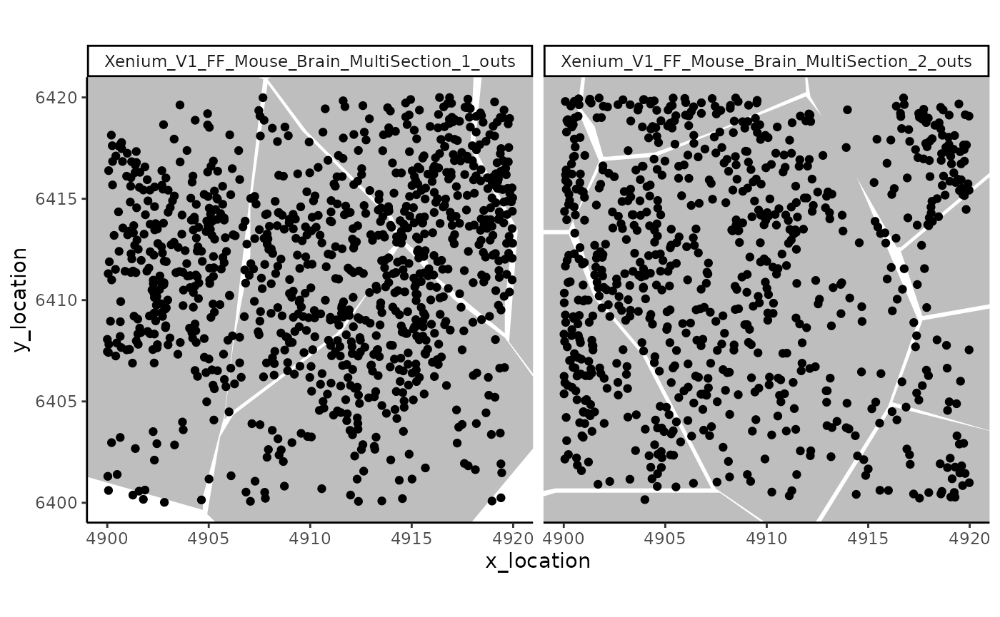
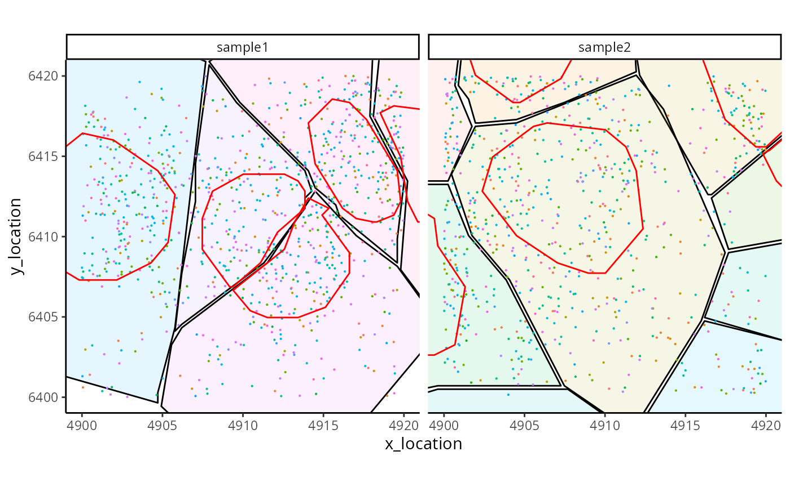
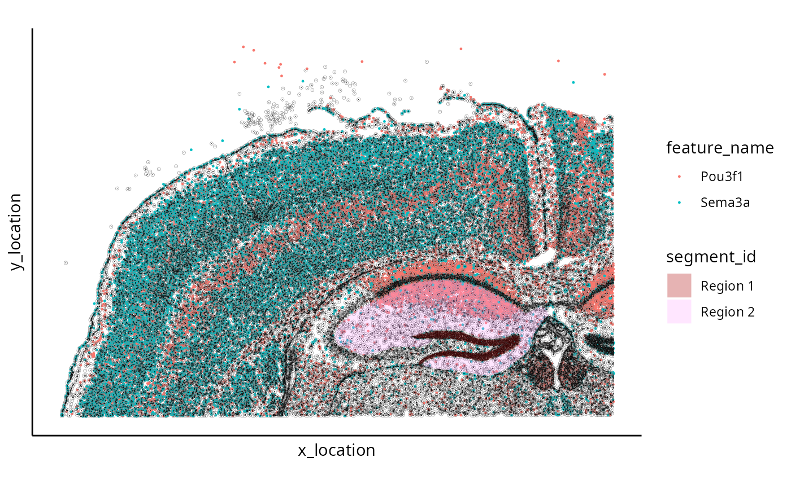

An introduction to the MoleculeExperiment Class
Bárbara Zita Peters Couto
School of Mathematics and Statistics, The University of Sydney, Sydney, NSW, 2006, AustraliaCharles Perkins Centre, The University of Sydney, Sydney, NSW, 2006, AustraliaSydney Precision Data Science Centre, The University of Sydney, Sydney, NSW, 2006, AustraliaNick Robertson
School of Mathematics and Statistics, The University of Sydney, Sydney, NSW, 2006, AustraliaCharles Perkins Centre, The University of Sydney, Sydney, NSW, 2006, AustraliaSydney Precision Data Science Centre, The University of Sydney, Sydney, NSW, 2006, AustraliaEllis Patrick
School of Mathematics and Statistics, The University of Sydney, Sydney, NSW, 2006, AustraliaCharles Perkins Centre, The University of Sydney, Sydney, NSW, 2006, AustraliaSydney Precision Data Science Centre, The University of Sydney, Sydney, NSW, 2006, AustraliaWestmead Institute for Medical Research, University of Sydney, AustraliaShila Ghazanfar
School of Mathematics and Statistics, The University of Sydney, Sydney, NSW, 2006, AustraliaCharles Perkins Centre, The University of Sydney, Sydney, NSW, 2006, AustraliaSydney Precision Data Science Centre, The University of Sydney, Sydney, NSW, 2006, Australia6 September 2023
Source:vignettes/MoleculeExperiment.Rmd
MoleculeExperiment.RmdMoleculeExperiment
The R package MoleculeExperiment contains functions to create and work with objects from the new MoleculeExperiment class. We introduce this class for analysing molecule-based spatial transcriptomics data (e.g., Xenium by 10X, CosMx SMI by Nanostring, and Merscope by Vizgen, among others).
Why the MoleculeExperiment class?
The goal of the MoleculeExperiment class is to: 1. Enable analysis of
spatial transcriptomics (ST) data at the molecule level, independent of
aggregating to the cell or tissue level. 2. Standardise molecule-based
ST data across vendors, to hopefully facilitate comparison of different
data sources and common analytical and visualisation workflows. 3.
Enable aggregation to a SpatialExperiment object given
combinations of molecules and segmentation boundaries.
Installation
The latest release of MoleculeExperiment can be installed using:
if (!require("BiocManager", quietly = TRUE)) {
install.packages("BiocManager")
}
BiocManager::install("MoleculeExperiment")Minimal example
- Load required libraries.
- Create MoleculeExperiment object with example Xenium data, taken over a small patch.
repoDir <- system.file("extdata", package = "MoleculeExperiment")
repoDir <- paste0(repoDir, "/xenium_V1_FF_Mouse_Brain")
me <- readXenium(repoDir,
keepCols = "essential"
)
me
#> class: MoleculeExperiment
#> 2 samples: sample1 sample2
#>
#> @molecules contents:
#> -detected assay:
#> Location range across all samples in assay "detected": [4900,4919.98] x [6400.02,6420]
#>
#> @boundaries contents:
#> -cell:
#> 7 unique segment IDs: 67500 67512 67515 67521 67527 ...- Use standardised data in ME object for molecule-level analyses. For example, plot a simple digital in-situ, with cell boundaries overlaid.
ggplot_me() +
geom_polygon_me(me, assayName = "cell", fill = "grey") +
geom_point_me(me) +
# zoom in to selected patch area
coord_cartesian(
xlim = c(4900, 4919.98),
ylim = c(6400.02, 6420)
)
- Finally, it is also possible to go from a MoleculeExperiment object to a SpatialExperiment object. This enables the transition from a molecule-level analysis to a cell-level analysis with already existing tools.
# transform ME to SPE object
spe <- countMolecules(me)
spe
#> class: SpatialExperiment
#> dim: 178 14
#> metadata(0):
#> assays(1): counts
#> rownames(178): 2010300C02Rik Acsbg1 ... Zfp536 Zfpm2
#> rowData names(0):
#> colnames(14): sample1.67500 sample1.67512 ... sample2.65070
#> sample2.65071
#> colData names(4): sample_id cell_id x_location y_location
#> reducedDimNames(1): spatial
#> mainExpName: NULL
#> altExpNames(0):
#> spatialCoords names(2) : x_location y_location
#> imgData names(0):The ME object in detail
Constructing an ME object
Use case 1: from dataframes to ME object
Here we demonstrate how to work with an ME object from toy data, representing a scenario where both the detected transcripts information and the boundary information have already been read into R. This requires the standardisation of the data with the dataframeToMEList() function.
The flexibility of the arguments in dataframeToMEList() enable the creation of a standard ME object across dataframes comming from different vendors of molecule-based spatial transcriptomics technologies.
- Generate a toy transcripts data.frame.
moleculesDf <- data.frame(
sample_id = rep(c("sample1", "sample2"), times = c(30, 20)),
features = rep(c("gene1", "gene2"), times = c(20, 30)),
x_coords = runif(50),
y_coords = runif(50)
)
head(moleculesDf)
#> sample_id features x_coords y_coords
#> 1 sample1 gene1 0.2615549 0.6127784
#> 2 sample1 gene1 0.4994048 0.9694453
#> 3 sample1 gene1 0.4615036 0.8137619
#> 4 sample1 gene1 0.8741814 0.9110435
#> 5 sample1 gene1 0.8933214 0.6546609
#> 6 sample1 gene1 0.1535346 0.3729775- Generate a toy boundaries data.frame.
boundariesDf <- data.frame(
sample_id = rep(c("sample1", "sample2"), times = c(16, 6)),
cell_id = rep(
c(
"cell1", "cell2", "cell3", "cell4",
"cell1", "cell2"
),
times = c(4, 4, 4, 4, 3, 3)
),
vertex_x = c(
0, 0.5, 0.5, 0,
0.5, 1, 1, 0.5,
0, 0.5, 0.5, 0,
0.5, 1, 1, 0.5,
0, 1, 0, 0, 1, 1
),
vertex_y = c(
0, 0, 0.5, 0.5,
0, 0, 0.5, 0.5,
0.5, 0.5, 1, 1,
0.5, 0.5, 1, 1,
0, 1, 1, 0, 0, 1
)
)
head(boundariesDf)
#> sample_id cell_id vertex_x vertex_y
#> 1 sample1 cell1 0.0 0.0
#> 2 sample1 cell1 0.5 0.0
#> 3 sample1 cell1 0.5 0.5
#> 4 sample1 cell1 0.0 0.5
#> 5 sample1 cell2 0.5 0.0
#> 6 sample1 cell2 1.0 0.0- Standardise transcripts dataframe to ME list format.
moleculesMEList <- dataframeToMEList(moleculesDf,
dfType = "molecules",
assayName = "detected",
sampleCol = "sample_id",
factorCol = "features",
xCol = "x_coords",
yCol = "y_coords"
)
str(moleculesMEList, max.level = 3)
#> List of 1
#> $ detected:List of 2
#> ..$ sample1:List of 2
#> .. ..$ gene1: tibble [20 × 2] (S3: tbl_df/tbl/data.frame)
#> .. ..$ gene2: tibble [10 × 2] (S3: tbl_df/tbl/data.frame)
#> ..$ sample2:List of 1
#> .. ..$ gene2: tibble [20 × 2] (S3: tbl_df/tbl/data.frame)- Standardise boundaries dataframe to ME list format.
boundariesMEList <- dataframeToMEList(boundariesDf,
dfType = "boundaries",
assayName = "cell",
sampleCol = "sample_id",
factorCol = "cell_id",
xCol = "vertex_x",
yCol = "vertex_y"
)
str(boundariesMEList, 3)
#> List of 1
#> $ cell:List of 2
#> ..$ sample1:List of 4
#> .. ..$ cell1: tibble [4 × 2] (S3: tbl_df/tbl/data.frame)
#> .. ..$ cell2: tibble [4 × 2] (S3: tbl_df/tbl/data.frame)
#> .. ..$ cell3: tibble [4 × 2] (S3: tbl_df/tbl/data.frame)
#> .. ..$ cell4: tibble [4 × 2] (S3: tbl_df/tbl/data.frame)
#> ..$ sample2:List of 2
#> .. ..$ cell1: tibble [3 × 2] (S3: tbl_df/tbl/data.frame)
#> .. ..$ cell2: tibble [3 × 2] (S3: tbl_df/tbl/data.frame)- Create an ME object by using the MoleculeExperiment object constructor.
toyME <- MoleculeExperiment(
molecules = moleculesMEList,
boundaries = boundariesMEList
)
toyME
#> class: MoleculeExperiment
#> 2 samples: sample1 sample2
#>
#> @molecules contents:
#> -detected assay:
#> Location range across all samples in assay "detected": [0.01,0.99] x [0,0.98]
#>
#> @boundaries contents:
#> -cell:
#> 3 unique segment IDs: cell1 cell2 cell3 cell4 ...- Add boundaries from an external segmentation algorithm.
In this example, we use the extent of the molecules of generated for
toyME to allign the boundaries with the molecules. In
general, the extent of the segmentation is required for this
alignment.
repoDir <- system.file("extdata", package = "MoleculeExperiment")
segMask <- paste0(repoDir, "/BIDcell_segmask.tif")
boundaries(toyME, "BIDcell_segmentation") <- readSegMask(
extent(toyME), # use the molecule extent to define the boundary extent
path = segMask, assayName = "BIDcell_segmentation",
sample_id = "sample1", background_value = 0
)
toyME
#> class: MoleculeExperiment
#> 2 samples: sample1 sample2
#>
#> @molecules contents:
#> -detected assay:
#> Location range across all samples in assay "detected": [0.01,0.99] x [0,0.98]
#>
#> @boundaries contents:
#> -cell:
#> 3 unique segment IDs: cell1 cell2 cell3 cell4 ...
#> -BIDcell_segmentation:
#> 89 unique segment IDs: 1 2 3 4 5 6 ...Use case 2: from machine’s output directory to ME object
The MoleculeExperiment package also provides functions to directly work with the directories containing output files of commonly used technologies. This is especially useful to work with data from multiple samples. Here we provide convenience functions to read in data from Xenium (10X Genomics), CosMx (Nanostring) and Merscope (Vizgen).
repoDir <- system.file("extdata", package = "MoleculeExperiment")
repoDir <- paste0(repoDir, "/xenium_V1_FF_Mouse_Brain")
me <- readXenium(repoDir,
keepCols = "essential",
addBoundaries = "cell"
)
me
#> class: MoleculeExperiment
#> 2 samples: sample1 sample2
#>
#> @molecules contents:
#> -detected assay:
#> Location range across all samples in assay "detected": [4900,4919.98] x [6400.02,6420]
#>
#> @boundaries contents:
#> -cell:
#> 7 unique segment IDs: 67500 67512 67515 67521 67527 ...readXenium() standardises the transcript and boundary information such that the column names are consistent across technologies when handling ME objects.
In addition, readXenium() enables the user to decide if they want to keep all data that is vendor-specific (e.g., column with qv score), some columns of interest, or only the essential columns. The latter refers to feature names and locations of the detected transcripts, and segment ids and boundary locations of the segmentation results.
For CosMx and Merscope data we provide convenience functions that standardise the raw transcripts data into a MoleculeExperiment object and additionally read the boundaries included in the standard data releases.
repoDir <- system.file("extdata", package = "MoleculeExperiment")
repoDir <- paste0(repoDir, "/nanostring_Lung9_Rep1")
meCosmx <- readCosmx(repoDir,
keepCols = "essential",
addBoundaries = "cell"
)
meCosmx
#> class: MoleculeExperiment
#> 2 samples: sample_1 sample_2
#>
#> @molecules contents:
#> -detected assay:
#> Location range across all samples in assay "detected": [924.01,3002] x [26290,26398]
#>
#> @boundaries contents:
#> -cell:
#> 98 unique segment IDs: 1 2 3 4 5 6 ...
repoDir <- system.file("extdata", package = "MoleculeExperiment")
repoDir <- paste0(repoDir, "/vizgen_HumanOvarianCancerPatient2Slice2")
meMerscope <- readMerscope(repoDir,
keepCols = "essential",
addBoundaries = "cell"
)
meMerscope
#> class: MoleculeExperiment
#> 1 samples: vizgen_HumanOvarianCancerPatient2Slice2
#>
#> @molecules contents:
#> -detected assay:
#> Location range across all samples in assay "detected": [10219.02,10386.83] x [8350.93,8395.3]
#>
#> @boundaries contents:
#> -cell:
#> 24 unique segment IDs: 45862 45865 45872 45873 45882 45887 ...ME object structure
A MoleculeExperiment object contains a @molecules slot and an optional @boundaries slot.
Both slots have a hierarchical list structure that consists of a nested list, ultimately ending in a data.frame/tibble. Traditional rectangular data structures, like dataframes, redundantly store gene names and sample IDs for the millions of transcripts. In contrast, data in a list enables us to avoid this redundancy and work with objects of smaller size.
molecules slot
The @molecules slot contains molecule-level information. The essential data it contains is the feature name (e.g., gene names) and x and y locations of the detected molecules (e.g., transcripts), in each sample. Nevertheless, the user can also decide to keep all molecule metadata (e.g., subcellular location: nucleus/cytoplasm).
The nested list in the molecules slot has the following hierarchical structure: “assay name” > “sample ID” > “feature name” > dataframe/tibble with X and Y locations (and other additional columns of interest).
showMolecules(me)
#> List of 1
#> $ detected:List of 2
#> ..$ sample1:List of 137
#> .. ..$ 2010300C02Rik : tibble [11 × 2] (S3: tbl_df/tbl/data.frame)
#> .. ..$ Acsbg1 : tibble [6 × 2] (S3: tbl_df/tbl/data.frame)
#> .. .. [list output truncated]
#> ..$ sample2:List of 143
#> .. ..$ 2010300C02Rik: tibble [9 × 2] (S3: tbl_df/tbl/data.frame)
#> .. ..$ Acsbg1 : tibble [10 × 2] (S3: tbl_df/tbl/data.frame)
#> .. .. [list output truncated]boundaries slot
The @boundaries slot contains information from segmentation analyses (e.g., cell boundaries, or nucleus boundaries).
The nested list in the boundaries slot has the following hierarchical structure: “assay name” > “sample ID” > “segment ID” > dataframe/tibble with the vertex coordinates defining the boundaries for each segment. For example, if the boundary information is for cells, the assay name can be set to “cell”; or “nucleus” if one is using nucleus boundaries.
showBoundaries(me)
#> List of 1
#> $ cell:List of 2
#> ..$ sample1:List of 5
#> .. ..$ 67500: tibble [13 × 2] (S3: tbl_df/tbl/data.frame)
#> .. ..$ 67512: tibble [13 × 2] (S3: tbl_df/tbl/data.frame)
#> .. .. [list output truncated]
#> ..$ sample2:List of 9
#> .. ..$ 65043: tibble [13 × 2] (S3: tbl_df/tbl/data.frame)
#> .. ..$ 65044: tibble [13 × 2] (S3: tbl_df/tbl/data.frame)
#> .. .. [list output truncated]Methods
Here we introduce basic methods to access and manipulate data in an ME object, i.e., getters and setters, respectively.
Getters
The main getters are molecules() and boundaries(). NOTE: the output of these methods is the ME nested list, which can be very large on screen. Thus, these getters should be used when wanting to work with the data. To quickly view the slot contents, use showMolecules() and showBoundaries() instead.
# NOTE: output not shown as it is too large
# access molecules slot
molecules(me)
# access cell boundary information in boundaries slot
boundaries(me, "cell")For ease of use, these getters have arguments that enable the transformation of the data from a nested ME list format to a data.frame format.
molecules(me, assayName = "detected", flatten = TRUE)
#> # A tibble: 1,739 × 4
#> x_location y_location feature_id sample_id
#> * <dbl> <dbl> <chr> <chr>
#> 1 4918. 6411. 2010300C02Rik sample1
#> 2 4901. 6417. 2010300C02Rik sample1
#> 3 4901. 6417. 2010300C02Rik sample1
#> 4 4910. 6417. 2010300C02Rik sample1
#> 5 4908. 6413. 2010300C02Rik sample1
#> 6 4911. 6407. 2010300C02Rik sample1
#> 7 4915. 6411. 2010300C02Rik sample1
#> 8 4916. 6412. 2010300C02Rik sample1
#> 9 4901. 6415. 2010300C02Rik sample1
#> 10 4906. 6417. 2010300C02Rik sample1
#> # ℹ 1,729 more rows
boundaries(me, assayName = "cell", flatten = TRUE)
#> # A tibble: 182 × 4
#> x_location y_location segment_id sample_id
#> * <dbl> <dbl> <chr> <chr>
#> 1 4905. 6400. 67500 sample1
#> 2 4899. 6401. 67500 sample1
#> 3 4894. 6408. 67500 sample1
#> 4 4890. 6418. 67500 sample1
#> 5 4887. 6423. 67500 sample1
#> 6 4887. 6425. 67500 sample1
#> 7 4890. 6427. 67500 sample1
#> 8 4891. 6427. 67500 sample1
#> 9 4894. 6426. 67500 sample1
#> 10 4908. 6421. 67500 sample1
#> # ℹ 172 more rowsOther getters include: features() and segmentIDs().
# get initial features in sample 1
head(features(me)[[1]])
#> [1] "2010300C02Rik" "Acsbg1" "Adamts2" "Adamtsl1"
#> [5] "Angpt1" "Aqp4"
segmentIDs(me, "cell")
#> $sample1
#> [1] "67500" "67512" "67515" "67521" "67527"
#>
#> $sample2
#> [1] "65043" "65044" "65051" "65055" "65063" "65064" "65067" "65070" "65071"Setters
Main setters include molecules<- and
boundaries<-. For example, with
boundaries<- one can add new segmentation assay
information to the boundaries slot. Here we demonstrate this with the
nucleus boundaries.
repoDir <- system.file("extdata", package = "MoleculeExperiment")
repoDir <- paste0(repoDir, "/xenium_V1_FF_Mouse_Brain")
nucleiMEList <- readBoundaries(
dataDir = repoDir,
pattern = "nucleus_boundaries.csv",
segmentIDCol = "cell_id",
xCol = "vertex_x",
yCol = "vertex_y",
keepCols = "essential",
boundariesAssay = "nucleus",
scaleFactorVector = 1
)
boundaries(me, "nucleus") <- nucleiMEList
me # note the addition of the nucleus boundaries to the boundaries slot
#> class: MoleculeExperiment
#> 2 samples: sample1 sample2
#>
#> @molecules contents:
#> -detected assay:
#> Location range across all samples in assay "detected": [4900,4919.98] x [6400.02,6420]
#>
#> @boundaries contents:
#> -cell:
#> 7 unique segment IDs: 67500 67512 67515 67521 67527 ...
#> -nucleus:
#> 5 unique segment IDs: 67500 67512 67515 67521 67527 ...The additional boundaries can be accessed, e.g. for visualisation.
ggplot_me() +
# add cell segments and colour by cell id
geom_polygon_me(me, byFill = "segment_id", colour = "black", alpha = 0.1) +
# add molecule points and colour by feature name
geom_point_me(me, byColour = "feature_id", size = 0.1) +
# add nuclei segments and colour the border with red
geom_polygon_me(me, assayName = "nucleus", fill = NA, colour = "red") +
# zoom in to selected patch area
coord_cartesian(xlim = c(4900, 4919.98), ylim = c(6400.02, 6420))
From MoleculeExperiment to SpatialExperiment
If one is interested in continuing downstream analysis at the cell-level, the MoleculeExperiment package also provides a convenience function, countMolecules(), that enables the transition from a MoleculeExperiment object to a SpatialExperiment object. With this functionality, it is possible to use already existing methods for cell-level data analysis.
spe <- countMolecules(me, boundariesAssay = "nucleus")
spe
#> class: SpatialExperiment
#> dim: 178 10
#> metadata(0):
#> assays(1): counts
#> rownames(178): 2010300C02Rik Acsbg1 ... Zfp536 Zfpm2
#> rowData names(0):
#> colnames(10): sample1.67500 sample1.67512 ... sample2.65063
#> sample2.65064
#> colData names(4): sample_id cell_id x_location y_location
#> reducedDimNames(1): spatial
#> mainExpName: NULL
#> altExpNames(0):
#> spatialCoords names(2) : x_location y_location
#> imgData names(0):Case Study: MoleculeExperiment and napari
Load the demonstration data, which includes molecules for 2 genes.
data(small_me)Read in virtual dissection CSV file, exported from napari (screenshot), of the morphology image.
bds_colours <- setNames(
c("#aa0000ff", "#ffaaffff"),
c("Region 1", "Region 2")
)
file_path <- system.file("extdata/tiny_brain_shape2.csv", package = "MoleculeExperiment")
bds_shape_raw <- read.csv(file = file_path, header = TRUE)
bds_shape_raw$sample_id <- "xenium_tiny_subset"
bds_shape_raw$regionName <- names(bds_colours)[bds_shape_raw$index + 1]
bds_shape <- dataframeToMEList(bds_shape_raw,
dfType = "boundaries",
assayName = "virtualDissection",
sampleCol = "sample_id",
factorCol = "regionName",
xCol = "axis.1",
yCol = "axis.0",
scaleFactor = 0.2125
)
boundaries(small_me, "virtualDissection") <- bds_shapeWe can plot the resulting MoleculeExperiment using the following code.
g <- ggplot() +
geom_point_me(
small_me,
assayName = "detected", byColour = "feature_id", size = 0.2
) +
geom_polygon_me(
small_me,
assayName = "cell", fill = NA, colour = "grey50", size = 0.1
) +
geom_polygon_me(
small_me,
assayName = "nucleus", fill = NA, colour = "black", size = 0.1
) +
geom_polygon_me(
small_me,
assayName = "virtualDissection", byFill = "segment_id", alpha = 0.3
) +
scale_y_reverse() +
theme_classic() +
theme(axis.text = element_blank()) +
theme(axis.ticks = element_blank()) +
coord_fixed() +
scale_fill_manual(values = bds_colours) +
NULL
g
Now that we have added the virtual dissection boundaries, we can use countMolecules to generate psuedobulk expressions over these regions.
spe <- countMolecules(
small_me, boundariesAssay = "virtualDissection")
speSessionInfo
sessionInfo()
#> R version 4.3.1 (2023-06-16)
#> Platform: x86_64-pc-linux-gnu (64-bit)
#> Running under: EndeavourOS
#>
#> Matrix products: default
#> BLAS: /usr/lib/libblas.so.3.11.0
#> LAPACK: /usr/lib/liblapack.so.3.11.0
#>
#> locale:
#> [1] LC_CTYPE=en_AU.UTF-8 LC_NUMERIC=C
#> [3] LC_TIME=en_AU.UTF-8 LC_COLLATE=en_AU.UTF-8
#> [5] LC_MONETARY=en_AU.UTF-8 LC_MESSAGES=en_AU.UTF-8
#> [7] LC_PAPER=en_AU.UTF-8 LC_NAME=C
#> [9] LC_ADDRESS=C LC_TELEPHONE=C
#> [11] LC_MEASUREMENT=en_AU.UTF-8 LC_IDENTIFICATION=C
#>
#> time zone: Australia/Sydney
#> tzcode source: system (glibc)
#>
#> attached base packages:
#> [1] stats graphics grDevices utils datasets methods base
#>
#> other attached packages:
#> [1] ggplot2_3.4.3 MoleculeExperiment_1.1.3 BiocStyle_2.28.0
#>
#> loaded via a namespace (and not attached):
#> [1] bitops_1.0-7 rlang_1.1.1
#> [3] magrittr_2.0.3 matrixStats_1.0.0
#> [5] compiler_4.3.1 DelayedMatrixStats_1.22.6
#> [7] png_0.1-8 systemfonts_1.0.4
#> [9] fftwtools_0.9-11 vctrs_0.6.3
#> [11] stringr_1.5.0 pkgconfig_2.0.3
#> [13] SpatialExperiment_1.10.0 crayon_1.5.2
#> [15] fastmap_1.1.1 magick_2.7.5
#> [17] XVector_0.40.0 scuttle_1.10.2
#> [19] labeling_0.4.3 utf8_1.2.3
#> [21] rmarkdown_2.24 ragg_1.2.5
#> [23] purrr_1.0.2 bit_4.0.5
#> [25] xfun_0.40 zlibbioc_1.46.0
#> [27] cachem_1.0.8 beachmat_2.16.0
#> [29] GenomeInfoDb_1.36.2 jsonlite_1.8.7
#> [31] highr_0.10 rhdf5filters_1.12.1
#> [33] DelayedArray_0.26.7 Rhdf5lib_1.22.0
#> [35] BiocParallel_1.34.2 jpeg_0.1-10
#> [37] tiff_0.1-11 terra_1.7-39
#> [39] parallel_4.3.1 R6_2.5.1
#> [41] bslib_0.5.1 stringi_1.7.12
#> [43] limma_3.56.2 GenomicRanges_1.52.0
#> [45] jquerylib_0.1.4 Rcpp_1.0.11
#> [47] bookdown_0.34 SummarizedExperiment_1.30.2
#> [49] knitr_1.43 R.utils_2.12.2
#> [51] IRanges_2.34.1 Matrix_1.6-0
#> [53] tidyselect_1.2.0 abind_1.4-5
#> [55] yaml_2.3.7 EBImage_4.42.0
#> [57] codetools_0.2-19 lattice_0.21-8
#> [59] tibble_3.2.1 Biobase_2.60.0
#> [61] withr_2.5.0 evaluate_0.21
#> [63] desc_1.4.2 pillar_1.9.0
#> [65] BiocManager_1.30.22 MatrixGenerics_1.12.3
#> [67] stats4_4.3.1 generics_0.1.3
#> [69] rprojroot_2.0.3 RCurl_1.98-1.12
#> [71] S4Vectors_0.38.1 sparseMatrixStats_1.12.2
#> [73] munsell_0.5.0 scales_1.2.1
#> [75] glue_1.6.2 tools_4.3.1
#> [77] data.table_1.14.8 locfit_1.5-9.8
#> [79] fs_1.6.3 rhdf5_2.44.0
#> [81] grid_4.3.1 DropletUtils_1.20.0
#> [83] edgeR_3.42.4 colorspace_2.1-0
#> [85] SingleCellExperiment_1.22.0 GenomeInfoDbData_1.2.10
#> [87] HDF5Array_1.28.1 cli_3.6.1
#> [89] textshaping_0.3.6 fansi_1.0.4
#> [91] S4Arrays_1.0.5 dplyr_1.1.2
#> [93] gtable_0.3.4 R.methodsS3_1.8.2
#> [95] sass_0.4.7 digest_0.6.33
#> [97] BiocGenerics_0.46.0 dqrng_0.3.1
#> [99] farver_2.1.1 rjson_0.2.21
#> [101] htmlwidgets_1.6.2 memoise_2.0.1
#> [103] htmltools_0.5.6 pkgdown_2.0.7
#> [105] R.oo_1.25.0 lifecycle_1.0.3
#> [107] bit64_4.0.5